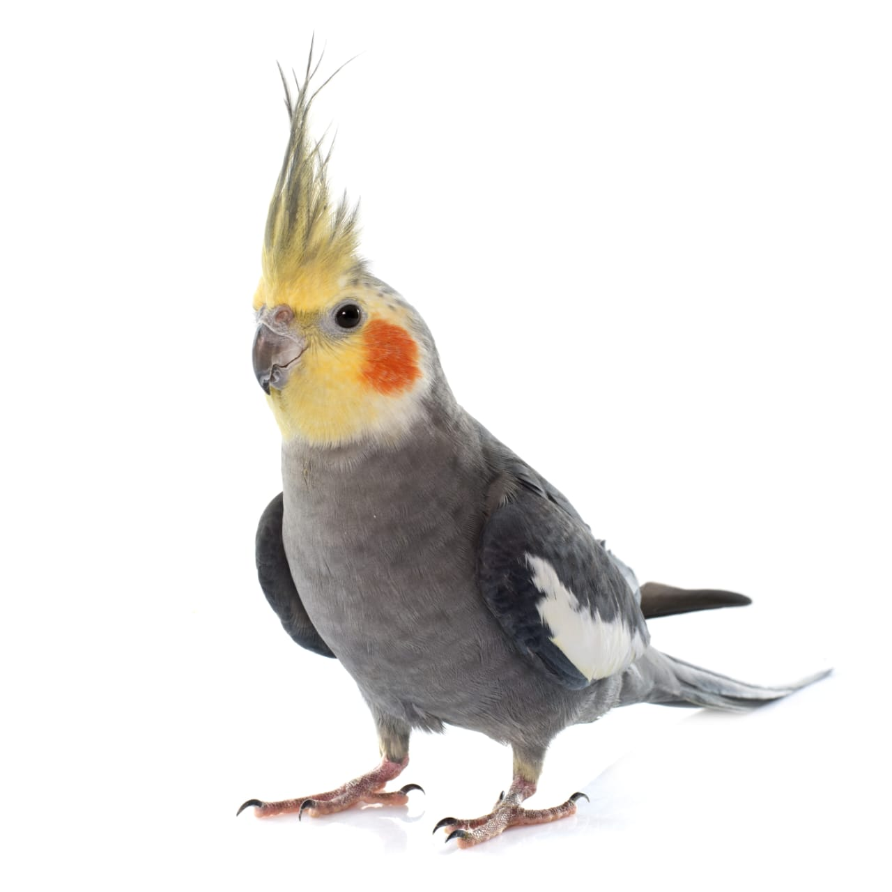

Ninfas
Las Ninfas
Las ninfas, también conocidas como carolinas o cacatúas ninfa, son aves pequeñas y
muy sociables que pertenecen a la familia de las cacatúas. Son populares como
mascotas por su carácter amigable y su capacidad de imitar sonidos.
Reproducción
Las ninfas ponen entre 4 y 6 huevos por nidada.
El período de incubación dura unos 18-21 días.
Ambos padres se turnan para incubar los huevos.
A las 8 semanas las crías ya pueden empezar a independizarse.
Origen
Las ninfas son originarias de Australia, donde viven en zonas áridasy semiáridas.
Allí vuelan en grandes bandadas y buscan alimentos en el suelo o los arbustos.
¿Que comen?
Frutas
°Manzana, pera, plátano, uvas, melón.
Verduras
°Zanahoria, espinaca, brócoli, pepino.
Semillas
°Alpiste, avena pelada, semillas de girasol, lino.
